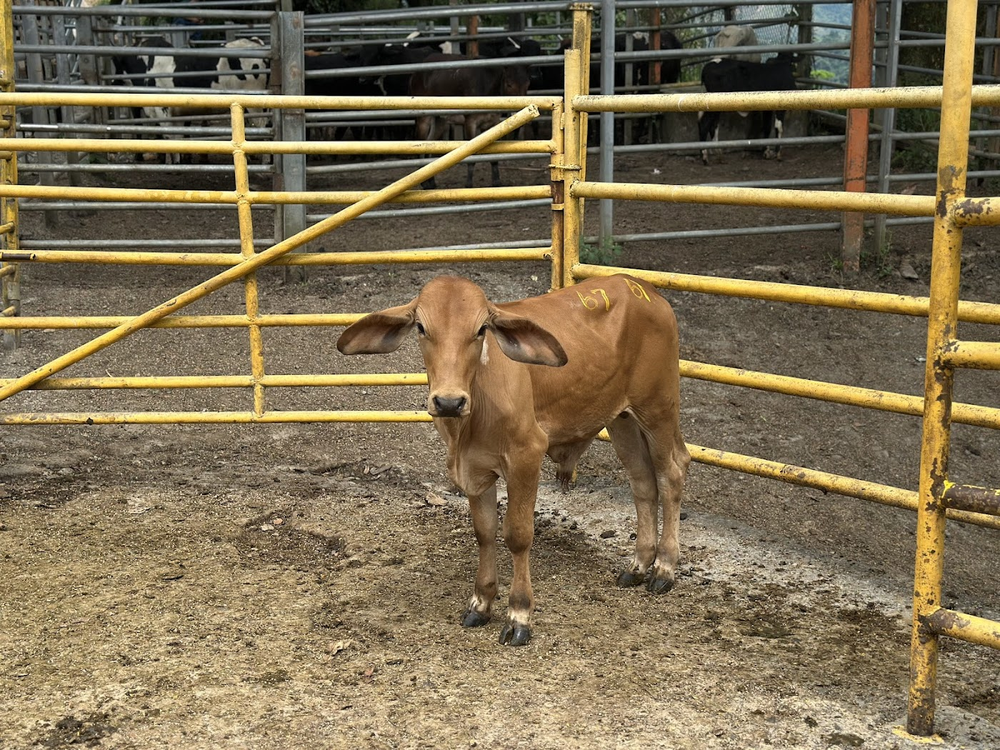
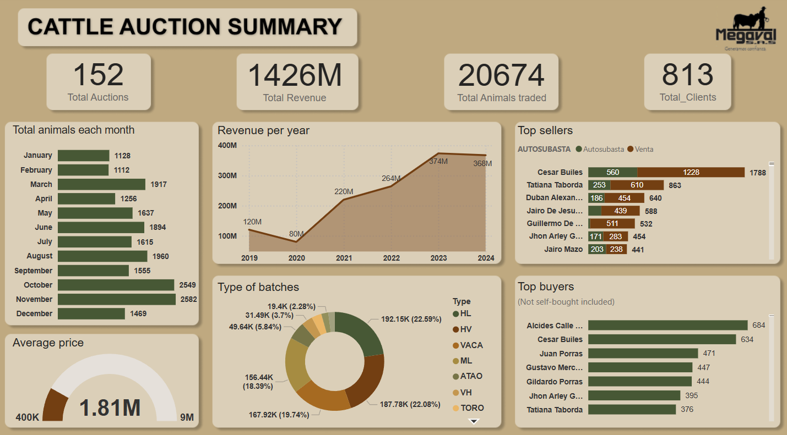

Data Analyst with knowledge in Python, SQL and Power Bi, and over 3 years of
professional experience which includes optimizing workflows and improving operational
efficiency. Proven ability to analyze processes, reduce errors, and enhance service
quality. Eager to contribute unique analytical skills to support organizational goals and
drive impactful results.

This project was done in MySQL using a database of a real cattle auction. Please note that some of the column names are in Spanish. If you wish to see this data visualized check my Power BI project.

This Power BI project is a real project use to present to managers from a Cattle Auction. It was done using the data we prepared in SQL. You can check the full interactive project clicking on the "View Project" button.